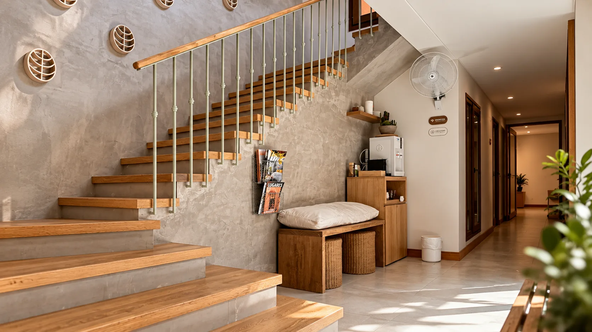

Ummana es un espacio integral de bienestar ubicado en Banfield, donde conviven la medicina, el movimiento, el arte y la creatividad.
Nuestro propósito es acompañar procesos de salud desde una mirada integrativa y funcional.
Nos importa la persona completa: su biología, su historia, sus hábitos, sus emociones y su entorno cotidiano.